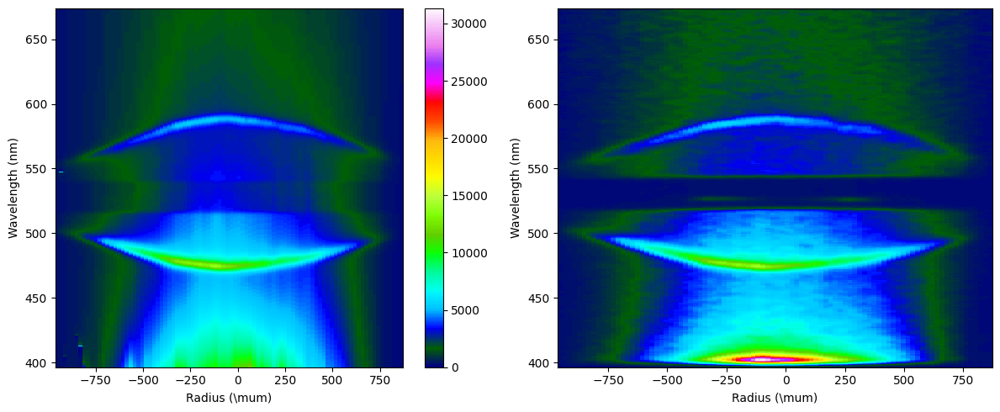
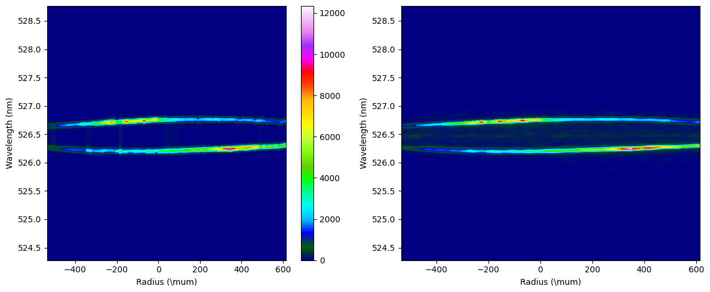
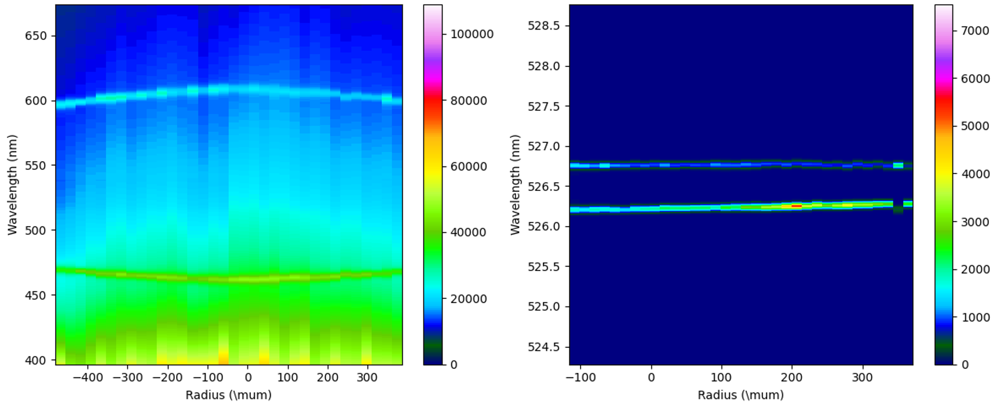
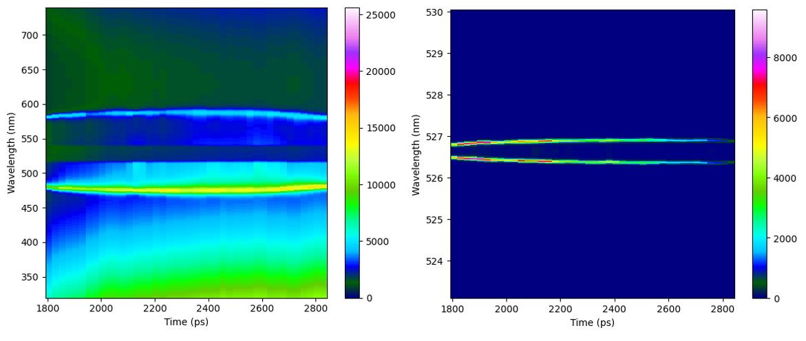
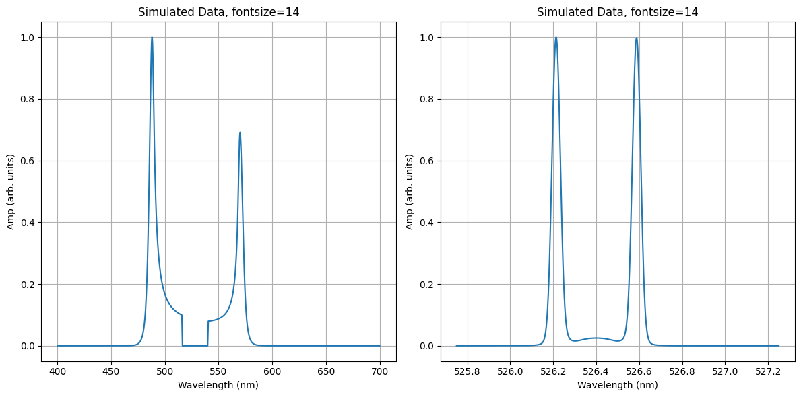

Example Gallery#
This page contains examples of the different run “modes” available with TASADAR. An example input and default deck for a single electron and single ion species can be found in the configs/1d/ folder.
For a detailed tutorial, see the getting started page.
Time resolved EPW

Time Resolved IAW

Spatialy Resolevd EPW

Spatialy Resolved IAW

Combined Spatialy Resolved

Combined Time Resolved

Forward Pass

Forward Pass Series